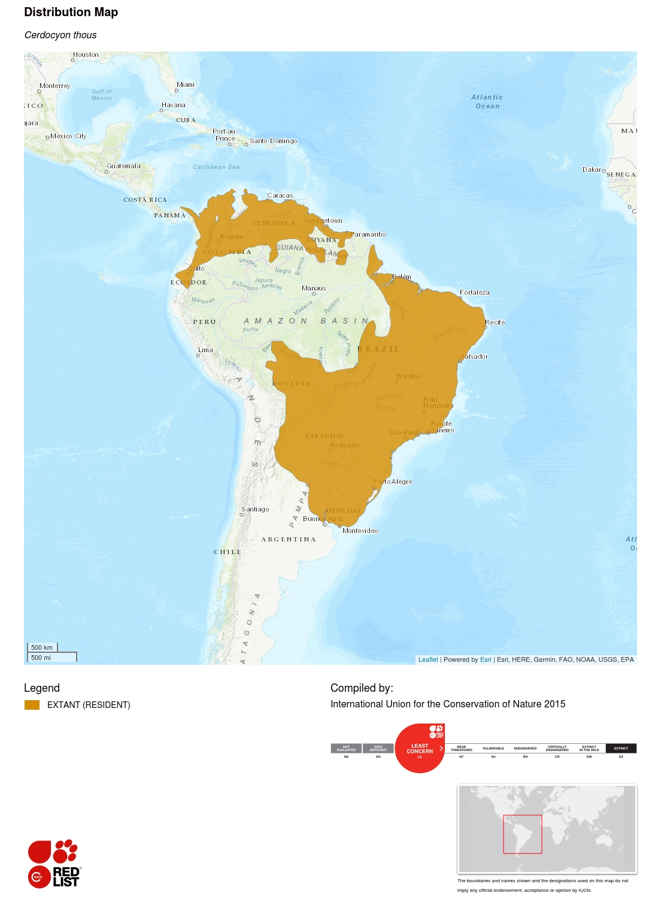

Camundongo
Mus musculus
Introdução
O Mus musculus, conhecido popularmente como camundongo, é um dos mamíferos mais bem adaptados a diferentes ambientes no mundo. Originalmente encontrado em áreas rurais e florestais, ele hoje habita também ambientes urbanos, convivendo próximo aos seres humanos. Sua incrível capacidade de adaptação, alta taxa reprodutiva e dieta onívora fazem dele uma espécie de destaque tanto no ecossistema quanto em pesquisas científicas.
1. Classificação Científica
Nome Científico: Mus musculus (Linnaeus, 1758)
Nomes Populares: Camundongo, rato-doméstico
Classificação Taxonômica:
2. Aspectos Reprodutivos
O Mus musculus possui reprodução vivípara(dá à luz filhotes já formados, em vez de botar ovos) e é extremamente prolífico(capacidade de se reproduzir em grande quantidade e com frequência). A gestação dura cerca de 19 a 21 dias, e as fêmeas podem ter várias ninhadas por ano. Após o nascimento, os filhotes são cuidados pela mãe até se tornarem independentes, geralmente após três semanas.
Características Reprodutivas:
- As fêmeas dão à luz entre 6 e 12 filhotes por ninhada.
- Os filhotes nascem cegos e sem pelos, desenvolvendo-se rapidamente nas primeiras semanas.
- A reprodução pode ocorrer durante o ano todo em condições favoráveis.
- Os machos podem se reproduzir a partir de 5 semanas de idade.
3. Risco de extinção
O Mus musculus não está em risco de extinção e é classificado como Pouco Preocupante (LC) pela IUCN. Ele possui ampla distribuição mundial, sendo encontrado em habitats urbanos e rurais. Contudo, populações selvagens podem enfrentar ameaças devido a predadores e perda de habitat em áreas específicas.
4. Ocorrência
O camundongo é encontrado em uma grande variedade de ambientes, incluindo:
Globalmente, o Mus musculus é encontrado em todos os continentes, com exceção da Antártida. Sua distribuição geográfica abrange países como Estados Unidos, Brasil, Índia e Austrália, entre outros.
5. Dieta e Hábitos Alimentares
Hábitos Alimentares: O Mus musculus é onívoro e se alimenta de uma ampla variedade de alimentos, incluindo grãos, sementes e restos de alimentos humanos. Sua dieta pode variar dependendo do habitat e da disponibilidade de recursos.
Principais Alimentos:
- Grãos: fonte comum de energia em áreas agrícolas.
- Sementes: especialmente em habitats naturais.
- Restos de alimentos: encontrados em áreas urbanas.
- Insetos: ocasionalmente consumidos como fonte de proteína.
6. Aparência e Morfologia
Aparência:
O Mus musculus apresenta corpo pequeno, medindo entre 7 e 10 cm, com peso variando de 10 a 25 gramas. Possui pelagem marrom ou cinza e cauda longa e fina. Seus olhos são grandes e orelhas proeminentes.
Características Adicionais:
- Possui patas adaptadas para escalar e cavar.
- É conhecido por sua agilidade e capacidade de adaptação a diferentes ambientes.
- Os dentes incisivos crescem continuamente, necessitando roer objetos para mantê-los curtos.
7. Nutrição
O Mus musculus é um animal oportunista quando se trata de alimentação, adaptando sua dieta conforme os recursos disponíveis no ambiente. Em ambientes naturais, ele consome predominantemente sementes e grãos, enquanto em áreas urbanas, sua dieta inclui restos de alimentos humanos e outros materiais facilmente acessíveis. Essa flexibilidade alimentar é uma das razões de seu sucesso adaptativo em diferentes ecossistemas.
Além disso, o camundongo é conhecido por armazenar alimentos em tocas, garantindo reservas para períodos de escassez, uma prática que demonstra sua capacidade de planejamento e sobrevivência em habitats desafiadores.
8. Papel ecológico
O camundongo desempenha um papel ecológico relevante como presa para diversas espécies de predadores, incluindo aves de rapina, répteis e mamíferos. Além disso, sua interação com o ambiente pode influenciar a dispersão de sementes e o controle populacional de insetos, contribuindo indiretamente para o equilíbrio dos ecossistemas em que habita.